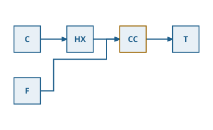

Flowsheets that lay themselves out
Function overview for the presentation of the envisionz framework, as of 28 Sep 2026. Directed block diagrams with named ports: a model without coordinates, a Sugiyama layered layout with orthogonal routing, an exchangeable canvas for screen and SVG, themes for colouring and info boxes, plus a Swing view with rail, plane filter and details table. Display and diagnosis, not an editor. For each building block: purpose, API, use in the framework, applications, examples. The examples are shortened.

LayeredLayout and drawn as SVG by FlowsheetRenderer, no crossings.Principles of the module
NfmlFlowsheetAdapter.LinkedHashMap).The model – pure topology envisionz.flowsheet.model
Graph, Node, Port, Edge, PortRef, Group, PlaneDef, PlaneFilter
An immutable graph of nodes, edges, groups and display planes, built with a Builder that checks references. A node has a kind (kind), side-fixed ports (WEST, EAST, NORTH, SOUTH, AUTO) and attributes. PRIMARY edges determine the layering, SECONDARY edges are fitted in afterwards. A plane is a part of the picture that can be shown or hidden, not a layer: filtered while drawing, everything stays in place; via Graph.filtered before the layout, the result is computed tighter.
Methods
Graph.builder(title):add(Node | Edge | Group),plane(PlaneDef),attribute(k, v),build()Graph:nodes(),edges(),edges(EdgeKind),node(id),filtered(PlaneFilter),defaultFilter()Node.of(id, label, kind),withAttribute;Port.of(id, input, order);Edge.of(id, from, to, EdgeKind);PortRef.node(id)PlaneFilter.all(),hiding(planes…),toggle(plane),isVisible(…)
Used in
What for
An NFML model as a plant schematic: units as blocks, streams as primary edges, equation couplings as secondary edges on their own plane.
Example – two blocks and one stream (names illustrative)
List<Port> ports = List.of(Port.of("ein", true, 0), Port.of("aus", false, 0));
Node v = new Node("V1", "Verdichter", "unit", PlaneDef.DEFAULT, ports, Map.of());
Node b = new Node("B1", "Brennkammer", "unit", PlaneDef.DEFAULT, ports, Map.of());
Graph g = Graph.builder("Kreisprozess").add(v).add(b)
.add(Edge.of("s1", new PortRef("V1", "aus"), new PortRef("B1", "ein"), EdgeKind.PRIMARY))
.build();Layered layout envisionz.flowsheet.layout
LayeredLayout – Sugiyama in seven stages
1. Break cycles (greedy feedback arc set after Eades, Lin, Smyth). 2. Assign layers, longest path over the primary edges. 3. Insert dummy nodes so every segment connects only neighbouring layers. 4. Minimise crossings, median method alternating forwards and backwards, keeping the best rather than the last state. 5. Coordinates, median alignment with overlap-free packing. 6. Ports side-fixed, sorted by the position of the partner block. 7. Orthogonal routing, track assignment in the gap between layers as interval colouring. Nodes without a primary edge are packed into the gap of their partners' centre of gravity. Background, formulas and pseudocode →
Methods
LayeredLayout.defaults(),new LayeredLayout(config, metrics, hints, sweeps),layout(Graph)→LayoutResultLayoutResult:box(id)→NodeBox,route(id)→EdgeRoute,width(),height(),layerCount(),nodeAt(x, y)- Metrics:
crossings(),crossings(edgeIds),totalEdgeLength(),bends() LayoutConfig.defaults(),DefaultNodeMetrics,LayoutHints.builder().layer(…).order(…).side(…)
Used in
What for
A readable schematic without manual work whose quality is measurable in numbers: crossings, edge length, bends – exactly what a person perceives as untidy in a picture.
Example – lay out and check the quality
LayoutResult lay = LayeredLayout.defaults().layout(g);
int kreuzungenStroeme = lay.crossings(Set.of("s1"));
double laenge = lay.totalEdgeLength();
int knicke = lay.bends();LayoutHints are binding: nodes with a hint stand at their place in the layer, the others are arranged around them.Rendering, themes, SVG envisionz.flowsheet.render · envisionz.flowsheet.render.svg
FlowsheetRenderer, FlowsheetCanvas, SvgCanvas
The renderer draws graph and layout onto a canvas with six primitives: rect, line, polyline, polygon, ellipse, text. The canvas aligns labels itself, the renderer measures no text widths. SvgCanvas writes SVG without a third-party library, with a fixed number of decimals and Locale.ROOT: generated files can be compared as text for regression testing and shown in the documentation pages of framework-viewer.
Methods
new FlowsheetRenderer(theme[, portRadius, arrow]),render(graph, layout, canvas[, PlaneFilter])new SvgCanvas(width, height),toSvg()→StringFlowsheetCanvas:rect,line,polyline,polygon,ellipse,text– each with aStyle
Used in
What for
The plant schematic as a file for reports and documentation, with the same info boxes as on screen.
Example – write SVG
SvgCanvas c = new SvgCanvas(lay.width(), lay.height());
new FlowsheetRenderer(new DefaultTheme()).render(g, lay, c);
Files.writeString(Path.of("kreisprozess.svg"), c.toSvg());Theme, DefaultTheme, HeatTheme, PinnedNoteTheme, NoteContent
The theme carries everything domain-specific about the appearance: colour by kind, by edge class, by attribute value, and directed(edge) decides about the arrow head (a stream has a direction, an equation coupling does not). HeatTheme colours the fill by one numeric attribute and the border by a second, both normalised to 0 to 1. PinnedNoteTheme lays pinned info boxes over another theme, so they also appear in the SVG file. NoteContent carries the content in structured form (head, subtitle, columns, rows); the columns line up geometrically, without a fixed-width font.
Methods
new HeatTheme(fillAttribute, strokeAttribute)new PinnedNoteTheme(base, pinned, textFunction),attributeText(node),format(value)NoteContent.plain(title, text),NoteRow.of(label, value)
Used in
What for
Diagnosis of an equation system in the picture: fill by diag.bound, border by diag.alarm; explained blocks in the report.
Swing view envisionz.flowsheet.swing
FlowsheetView, FlowsheetPanel, FlowsheetDetailsPanel, Graphics2DCanvas
Layout [ rail | tool card ] | canvas: a vertical bar with CardLayout, shipped with the cards "planes" and "details", more via addCard; the divider can be moved and collapsed completely. The canvas zooms (also around the mouse position), pans and fits, hit-tests nodes on the layout rather than on pixels (exact at any scale), reports the selection as an event and pins info boxes by double-click, by default only one at a time. The details of the selected node appear in a table that can be selected and copied.
Methods
new FlowsheetView(graph, layout, theme),addCard(id, label, tip[, icon], component),setCardIcon,setCollapseIcons,showCard,widestCard(),railWidth(),canvas(),details()FlowsheetPanel:select(id),addSelectionListener,togglePin,setSinglePin,setFilter,setContent(g, l),setTheme,fitToWindow(),paintInto(Graphics2D)FlowsheetView.heading(text)– the same structure for contributed cards
Used in
What for
The flowsheet of a model in the equation solver's tab, with diagnostic values and pinned explanations; paint headless into an image to check it.
Example – view with its own card and selection
FlowsheetView view = new FlowsheetView(g, lay, new HeatTheme("diag.bound", "diag.alarm")); // as in app-eqnparser
view.addCard("infokasten", "Infokasten", "Welche Rechenstände im Kasten stehen",
Icons.load("sticky-note.png"), new NoteConfigPanel(…));
view.canvas().addSelectionListener(id -> status.setText(id == null ? "" : id));
tab.add(view, BorderLayout.CENTER);Usage matrix in the framework
Which modules use which parts today, counted in the source code (excluding probes).
| Module | Model | Layout | Renderer, SVG | Themes, info boxes | Swing view | What for |
|---|---|---|---|---|---|---|
| app-eqnparser | ● | ● | ● | ● | ● | flowsheet of an NFML model with diagnosis, SVG export |